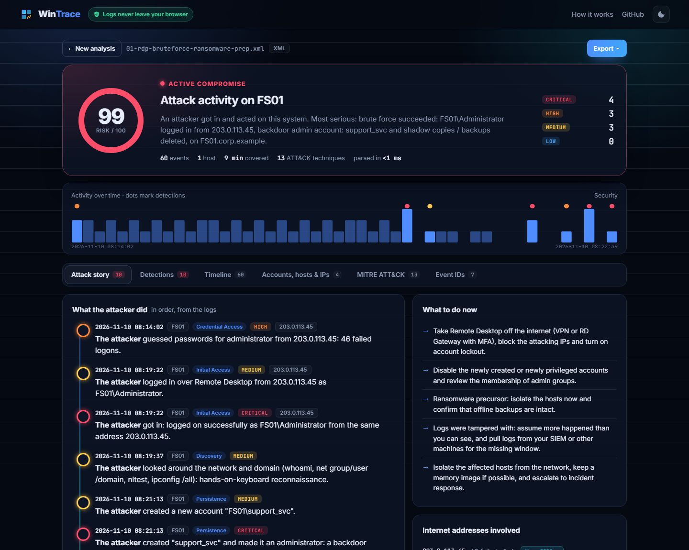

Windows forensics · 8 min read · November 2026
I wrote a Windows EVTX parser from scratch
Every Windows machine records logons, new services, PowerShell and cleared logs in .evtx files. They look like XML in Event Viewer, but on disk they're a compact binary format. To build WinTrace without dependencies, I decoded it myself in plain JavaScript. This is how the format works, and the bug that taught me to trust a hex dump.
Why not just use a library?
WinTrace runs entirely in the browser, so the logs never leave the analyst's machine. Good EVTX parsers exist in Python and Rust, but none fit a zero-dependency web page. Writing my own was also the best way to really understand what a SOC analyst is looking at when they open Event Viewer.
The layout: header, chunks, records
An .evtx file starts with a 4 KB header (magic ElfFile\0), then a series of fixed 64 KB chunks (magic ElfChnk\0). Each chunk is self-contained: it has its own header with a table of element-name strings and a table of templates, and from offset 0x200 onwards it holds the event records.
record
0x00 u32 magic 0x00002a2a
0x04 u32 size
0x08 u64 record number
0x10 u64 FILETIME (100-ns ticks since 1601)
0x18 ... Binary XML payload
end-4 u32 size againThe interesting part is that payload. It isn't XML text; it's Binary XML, a stream of one-byte tokens.
Binary XML: tokens, names and templates
The token stream reads like a tiny bytecode: 0x0F fragment header, 0x01/0x41 open an element (the 0x40 bit means "has attributes"), 0x06 an attribute, 0x05 a literal value, 0x02/0x03 close the start tag, 0x04 end the element, 0x00 end of stream.
Two tricks keep the files small:
- Names are stored once per chunk. An element only points at its name (
EventData,TargetUserName…). The first time a name appears in a chunk, it's written inline, right inside the token; after that it's just an offset. - Templates. Thousands of 4624 logon events share the same shape. Windows stores that shape once as a template (token
0x0C), with substitution slots (0x0D/0x0E) where the values go. Each record then only carries an array of typed values.
Those values are typed: 0x01 UTF-16 string, 0x08 uint32, 0x11 FILETIME, 0x13 SID, 0x0F GUID, 0x14 hex number, and 0x21, which is another Binary XML fragment. That last one is how EventData ends up nested inside the Event template, so the parser has to be recursive.
// a record = template + values
templateInstance(pos) {
const defOff = u32(pos + 6); // where the template lives in the chunk
const tpl = this.template(defOff); // parsed once, then cached per chunk
if (defOff === pos + 10 - chunkBase) // first use: the definition is inline here
pos += 24 + tpl.size;
const values = readSubstitutionArray(pos);
return instantiate(tpl.nodes, values); // fill the slots
}The bug: 337 records out of 1,601
My first run on a real System.evtx parsed 337 records and failed on 1,264, all with the same error: expected CloseStartElement at 0x251. The failures weren't random. Every record whose template was being used for the first time in its chunk broke, and every record re-using an already-seen template worked.
The difference between those two cases is exactly the inline names. So I dumped the bytes of the first record:
0240 01 00 41 11 00 86 04 00 00 4d 02 00 00 00 00 00
0250 00 ba 0c 05 00 45 00 76 00 65 00 6e 00 74 00 00
0260 00 87 00 00 00 06 6a 02 00 00 ...At 0x242 is 0x41, an element with attributes. The name offset says 0x24D, which is the very next byte after the fixed fields: an inline name, "Event" (5 UTF-16 characters). And only after the name, at 0x261, comes 87 00 00 00: the size of the attribute list.
I had read the attribute-list size before skipping the inline name, so every first-use template was misaligned by a name's length. Swapping two lines fixed it:
p = pos + fixed;
if (nameOff === p - base) p += nameLength(nameOff); // inline name first…
if (hasAttrs) p += 4; // …then the attribute list sizeResult: 1,601 of 1,601 records, 0 errors, and 2,261 of 2,261 on a Security log.
Proving it's right
"No errors" doesn't mean "correct". So I tested against the reference files from python-evtx (Apache-2.0), whose test suite records the expected values: the file header fields, record counts per file, and the full XML of the first record. My test checks the same things, down to the provider GUID, Keywords 0x8000000000000000 and the timestamp 2012-03-14 04:17:43.354563.
That timestamp caught one last mismatch: I printed .354562. FILETIME counts 100-nanosecond ticks; I was truncating to microseconds while the reference rounds. One + 5n before dividing by 10 fixed it.
Real logs are often dirty (the "file is dirty" flag is set on a live log), so the parser never throws on a bad record: it skips it, records the error and keeps going. A deliberately malformed file from python-evtx's bug tracker still yields its 5 records.

What I took away
- Patterns in failures are clues. "Only first-use templates fail" pointed straight at inline names.
- A hex dump beats guessing. Five minutes of reading bytes saved hours of rewriting.
- Test against a reference, not against yourself. Without python-evtx's known values I'd have shipped a parser that was off by one microsecond, and wouldn't have known.
- As a defender, I now read events differently. Knowing that a 4624 is a template plus 20 typed values makes it obvious which fields an attacker controls and which ones Windows fills in.